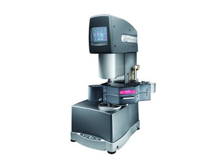
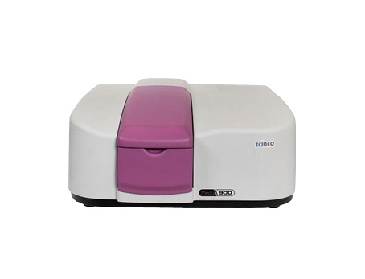

새로운 생각으로
연구개발 하는 强한 기업
TTT는 1988년 창립 이래 항상 새로운 제품 개발만을 目標로 하는 R&D 中心會社 입니다.
계속적으로 변하는 시작 TREND에 반응하며 새로운 시장 주도형 제품을 연구하고 있습니다.
항상 새로운 생각을 가지고 모든 産業에 효율적이며 안전하고 강한 TTT 시장을 확보,
硏究해 오고 있으며 앞으로도 다른 경쟁 업체와 달리 연구 지향적인 회사로 도약할 것입니다.
변화의 선봉에서 세계 우수한 업체들과 경쟁하며, 항상 새로운 생각으로 연구개발하는 强한 會社로 도약할 것입니다.
Stories
-
1990 공장 준공

-
 1999 연구소 신축
1999 연구소 신축 -
 2011 회사명 변경
2011 회사명 변경
TTT Chemicals Co., Ltd. -
 2016 연구소 증축
2016 연구소 증축 -
2017 무역의 수출탑
500만불 수상
주요 기술
We React Better
분석 기기
- 레오미터
-
레오미터는 측정부에 해당 재료를 탑재하고 주변 온도를 조절한 후, 광범위한 응력, 변형력 및 변형률을 적용하여 측정하는 정밀 기기입니다.
ARES-G2는 연구 및 재료 개발을 위한 최첨단 회전식 레오미터이며, 변형 제어를 위한 전용 구동기, TRT(토크 재균형 트랜스듀서) 및 독립적 전단 응력과 정상 응력 측정을 위한 FRT(재균형력 트랜스듀서)가 있는 유일한 상용 레오미터입니다. 유변학계에서는 다른 어떤 레오미터보다 정확도가 뛰어남을 인정 받고 있습니다.제조사: TA Instruments
- Py-GC system
-
 Py(pyrolysis)-GC/MS는 고분자 물질의 정량/정성적 분석이 가능합니다. 열분해(pyrolysis)를 통해 발생된 기체생성물은 각 물질의 독특한 특성을 반영, 성분분석을 통해 고분자의 조성, 공중합체의 구조 등을 확인하는 것이 사례입니다.
Py(pyrolysis)-GC/MS는 고분자 물질의 정량/정성적 분석이 가능합니다. 열분해(pyrolysis)를 통해 발생된 기체생성물은 각 물질의 독특한 특성을 반영, 성분분석을 통해 고분자의 조성, 공중합체의 구조 등을 확인하는 것이 사례입니다.
입고된 원료들의 Py-GC/MS 진행하여, Lot 관리를 진행하고 있으며, 대상 물질의 미량 미지 시료를 찾아, 품질 관리 및 연구 개발에 적용하고 있습니다.제조사: Agilent(GC/MS) Frontier LAB(Pyrolyzer)
- DMA
-
고분자, 고무, compounds, blends, 접착제(glues), lacquers, emulsions, 유리, 금속등의 여러 가지 물질을 분석에 외부 변화 (Frequency, Temp 등) 를 주어 회복력과 변형율을 측정하여 Storage modulus, loss modulus와 같은 점탄성 거동 분석 및 유리전이온도의 거동을 확인 할 수 있습니다.
국내에서 보유 중인 회사가 많지 않을 정도고 고가의 장비이며, 갤럭시 폴드와 같은 flexible display용에 적용되는 제품들에 필수적으로 있어야하는 Spec인 저온 및 고온 Storage modulus 등을 측정하는데 사용 가능합니다.제조사: Mettler Toledo
- 오토클레이브
-
- LCD, 전지, 휴대폰 필름, 액정 등의 AGING, 기포제거 및 CRACK 확인 등과 같이 전자부품 산업에 반드시 필요한 생산 장비.
- 고강도 패킹 구조로 진공과 압력유지에 탁월함
- 정확하고 정밀한 압력 및 온도 제어를 바탕으로 승온 및 가압하여 반도체 패키징, LCD등의 Aging 및 기포제거에 꼭 필요한 생산 장비
- PID Auto-tuning controller 주변 환경에 맞게 PID 값을 찾아 정확한 온도 제어 가능
-정확하고 정밀한 압력 및 온도 제어를 바탕으로 승온 및 가압하여 여러 다양한 산업에 필요한 연구개발용 장비제조사: irea tech
- GPC System
-
㈜ 티티티의 제품들은 고분자로 이루어져 있습니다. 이는 분자량이 높으며 저분자량에서 고분자까지의 분자량 분포를 가지고 있다는 것입니다. 이 분자량과 분포특성이 제품의 최종물성과 품질유지에 많은 영향을 미치기 때문에, 기본적이면서 중요한 분석입니다.
자사에서는 오랜 기간 동안 GPC 운용(2005~현재) 으로 관련 데이터 수집 및 분석 능력 축척, 이를 통해 완성도 높은 제품을 만드는데 사용하고 있습니다.제조사: Waters
- UV-VIS
-
어떤 시료 분자가 어느 파장의 빛을 흡수하며, 그 흡광도는 얼마나 되는지 측정하는 기기 장치로주로 benzene ring과 같은 이중결합(C=C)이 있으면 이 자외선 가시광선영역의 흡수가 일어납니다.
핸드폰 보호 필름이나 OCA, UV 관련 제품 등 개발시 필요한 장비로 투과율 분석, 흡광 범위를 확인해 적절한 첨가제를 적용하는 등 자사의 연구 개발을 지원하는 장비입니다.제조사: Scinco
- DSC
-
Sample cell과 reference cell에 일정한 승온 속도로 가열하면, 그 Sample 물질의 상변화에 따라, 흡열 및 발열을 보입니다. 이를 통해 유리 전이 온도, 용융 온도 등의 물성 데이터를 확보 합니다.
고분자의 특성은 유리 전이 온도에 영향을 많이 받으며, 정확한 유리 전이 온도를 아는 것이 연구 개발에 큰 도움을 줍니다. 자사에서는 제품 및 개발 진행 중인 물질의 DSC측정 을 통해 얻은 데이터베이스를 이용하고 있습니다.제조사: TA Instruments
- IR system
-
유기 물질은 고유한 스펙트럼을 가지고 있어, 지문(fingerprint) 같다고 볼 수 있습니다. 이러한 특성으로 성분 분석, 구조 분석등에효과적으로 사용할 수 있습니다.있습니다. 분석 모드는 Film 및 KBr pellet법, ATR법 모두 가능하며, 분말, 액상, 필름, 다양한 형태의 고체 등 대부분의 시료가 소량으로도(분말기준 1g) 분석이 가능합니다.
상용 FTIR database library 및 자사에서 자체적으로 보유한 3000여건의 database를 바탕으로 연구 개발 및 품질 관리 분야에 적용하고 있습니다.제조사: Perkin Elmer
- 접촉각 측정기
-
액체방울(주로 물)을 측정하고자하는 표면위에 떨어뜨린 후, 움직이지 않은 액체방울과 표면이 이루는 각도를 측정합니다. 여기서 측정된 각도를 표면의 표면 장력을 산출합니다.
표면의 표면장력이 높을수록 물에 대한 젖음성(Wettability)이 좋아지고 접촉각은 작아집니다. 접촉각이 작다는 것은 친수성이 크고 젖음성이 좋고 접착성이 좋아짐을 의미합니다.
이것을 바탕으로 하여 밀착성을 올릴 때, 유사한 표면 장력 값을 가지도록 설계를 진행하고, QA에서는 불량 원인 분석시 통상의 표면장력 값과 비교하여 다름 유무를 가지고 표면의 오염 유무를 판단하여 대응하고 있습니다.제조사: Kruss
- 프루브텍 측정기
-
점착제의 tack을 측정하는 방법은 Loop, Probe, Rolling, ball tack 등이 있습니다. 이 장비는 probe tack을 측정하는 장비로 규정 치수의 Stainless 원통형 봉이 일정한 힘으로 점착면에 닿았다 떨어질 때의 힘의 세기를 표시를 측정하며 수치화된 자료를 얻을 수 있습니다.
제조사: Mecmeshin
- 변각 광도계
-
변각 광도계는 각도에 의해 변화하는 시료의 반사율과 투과율 측정을 목적으로 하는 분석기기 입니다. 각 각도의 반사율을 연속측정한 후, 얻어진 데이터에서 반사 분포도를 작성하여 시료의 광학적 특성의 해석이 가능합니다.
투광각도를 180°로 이동시켜 투과율도 측정이 가능합니다. 기능성 수지, 광학 Film, 포장재, Glass 등의 평가에 넣어 사용되고 있는 분석 기기입니다.제조사: Nippon Denshoku
- 색차계
-
재료의 색에 대한 평가가 필요한 물질을 대상으로 합니다. CIELAB에서의 색좌표는 L * a * b * 로 표시하게 되며, L*은 명도, a*는 Red와 Green의 정도, b*는 Yellow와 Blue의 정도를 나타내는 수치입니다. 색좌표 내에서 두 색의 위치 사이의 거리를 ∆E로 표시하며 이를 ‘색차’라 합니다. 또한 색차계를 이용하여 황색도(황변도) YI 값도 측정 가능합니다.
제조사: Nippon Denshoku
- 광학 현미경
-
렌즈 시스템으로 이루어진 측정 기기로 육안으로 보기 힘든 물체를 보는데 사용합니다. 본사에서는 코팅면의 상태 및 이물질 유무 등을 확인하는 쪽에 적용하고 있습니다.
제조사: Olympus
- 항온 항습기
-
제조사: SJ 사이언스
- 점착력 측정기(인장기)
-
제조사: Mecmeshin(측정 범위: 2.5N & 50N & 100N)